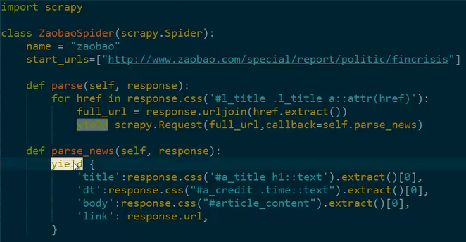
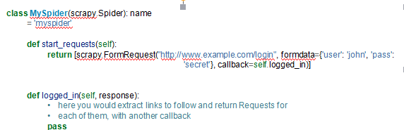

概念
spider是一个类，它定义了这样爬取一个网站，包括怎样跟踪连接、怎样抓取数据
循环执行流程
Generating the initial requests
Parse the response
Using selector
Store item
之前项目中的一个实例

属性
·name：spider 的名称，要求唯一
A string which defines the name for this spider. The spider name is how the spider is located (and instan-tiated) by Scrapy, so it must be unique. However, nothing prevents you from instantiating more than one instance of the same spider. This is the most important spider attribute and it’s required.
If the spider scrapes a single domain, a common practice is to name the spider after the domain, with or without the TLD. So, for example, a spider that crawls mywebsite.com would often be called mywebsite.
·allowed-domains：允许的域名
An optional list of strings containing domains that this spider is allowed to crawl. Requests for URLs not belonging to the domain names specified in this list won’t be followed if OffsiteMiddleware is enabled.
·start-urls：初始urls
A list of URLs where the spider will begin to crawl from, when no particular URLs are specified. So, the first pages downloaded will be those listed here. The subsequent URLs will be generated successively from data contained in the start URLs.
·Crawler：抓取器，spider将绑定到它上面
This attribute is set by the from_crawler() class method after initializating the class, and links to the Crawler object to which this spider instance is bound.
Crawlers encapsulate a lot of components in the project for their single entry access (such as extensions, middlewares, signals managers, etc). See Crawler API to know more about them.
For a list of available built-in settings see: Built-in settings reference.
·Setting：配置实例，包含工程中所有的配置变量
Configuration on which this spider is been ran. This is a Settings instance, see the Settings topic for a detailed introduction on this subject.
·Logger：日志实例
Python logger created with the Spider’s name. You can use it to send log messages through it as described on Logging from Spiders.
方法
·from_crawler(crawler,*args,**kwargs)类方法，用于创建spider
This is the class method used by Scrapy to create your spiders.
You probably won’t need to override this directly, since the default implementation acts as a proxy to the __init__() method, calling it with the given arguments args and named arguments kwargs.
Nonetheless, this method sets the crawler and settings attributes in the new instance, so they can be accessed later inside the spider’s code.
Parameters
•crawler (Crawler instance) – crawler to which the spider will be bound
•args (list) – arguments passed to the __init__() method
•kwargs (dict) – keyword arguments passed to the __init__() method
·start_requests():生成初始的requests
This method must return an iterable with the first Requests to crawl for this spider.
This is the method called by Scrapy when the spider is opened for scraping when no particular URLs are specified. If particular URLs are specified, the make_requests_from_url() is used instead to create the Requests. This method is also called only once from Scrapy, so it’s safe to implement it as a generator.
The default implementation uses make_requests_from_url() to generate Requests for each url in start_urls.
If you want to change the Requests used to start scraping a domain, this is the method to override. For example, if you need to start by logging in using a POST request, you could do:

·make_requests_from_url(url)：根据url生成一个request
A method that receives a URL and returns a Request object (or a list of Request objects) to scrape. This method is used to construct the initial requests in the start_requests() method, and is typically used to convert urls to requests.
Unless overridden, this method returns Requests with the parse() method as their callback function, and with dont_filter parameter enabled (see Request class for more info).
·parse（response）用来解析网页内容
This is the default callback used by Scrapy to process downloaded responses, when their requests don’t specify a callback.
The parse method is in charge of processing the response and returning scraped data and/or more URLs to follow. Other Requests callbacks have the same requirements as the Spider class.
This method, as well as any other Request callback, must return an iterable of Request and/or dicts or Item objects.
·log（message[,level,component]）：用来记录日志，这里请使用logger属性记录日志。
Wrapper that sends a log message through the Spider’s logger, kept for backwards compatibility. For more information see Logging from Spiders.
·Self.logger.info(“visited success”)
·Closed(reason):当spider关闭的时候调用的方法
Called when the spider closes. This method provides a shortcut to signals.connect() for the spider_closed signal.
1、最常用的spider，用于抓取普通的网页
2、增加了两个成员
1）rules：定义了一些抓取规则——连接怎么跟踪、使用哪一个parse函数解析此链接；
Which is a list of one (or more) Rule objects. Each Rule defines a certain behaviour for crawling the site. Rules objects are described below. If multiple rules match the same link, the first one will be used, according to the order they’re defined in this attribute.
2）parse_start-url(response):解析初始的url的相应
This method is called for the start_urls responses. It allows to parse the initial responses and must return either an Item object, a Request object, or an iterable containing any of them.
【本文由麦子学院独家原创，转载请注明出处并保留原文链接】